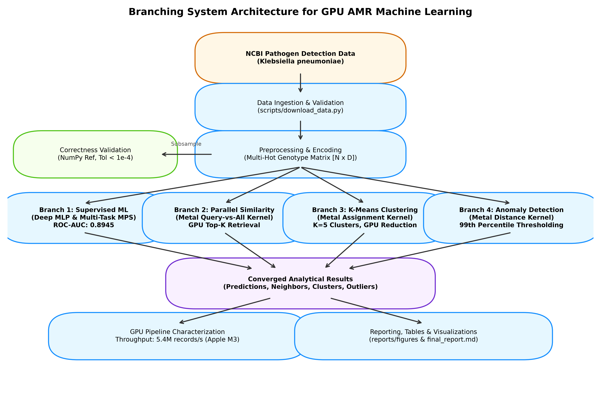
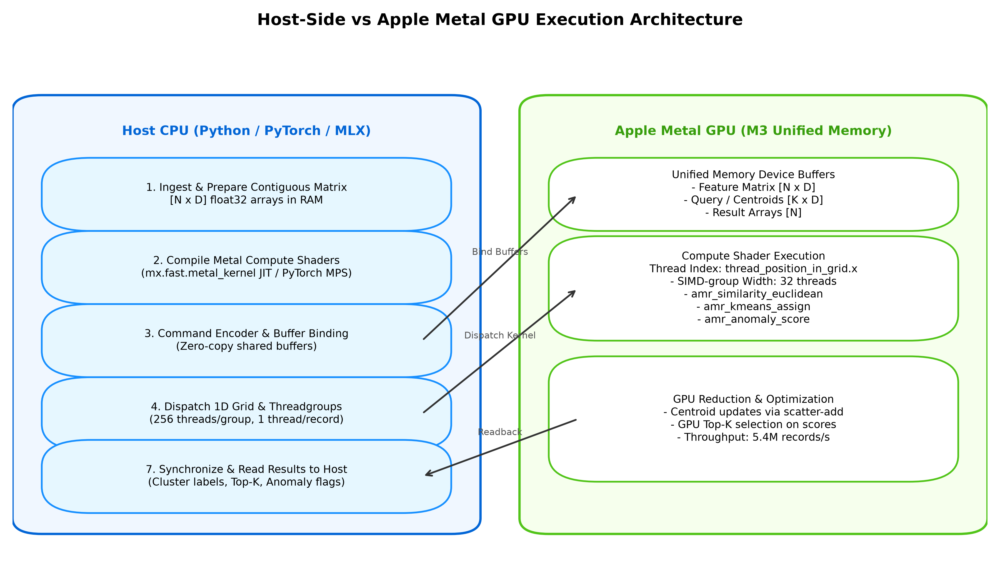
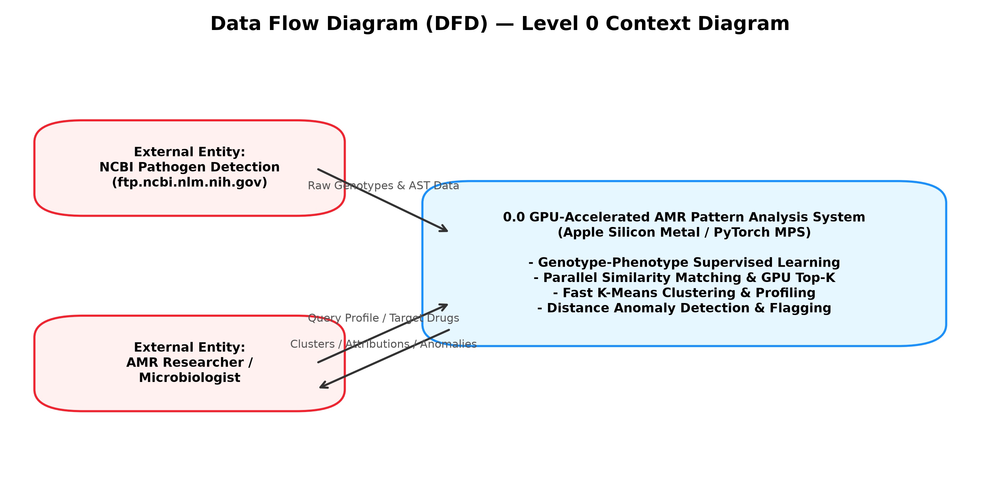
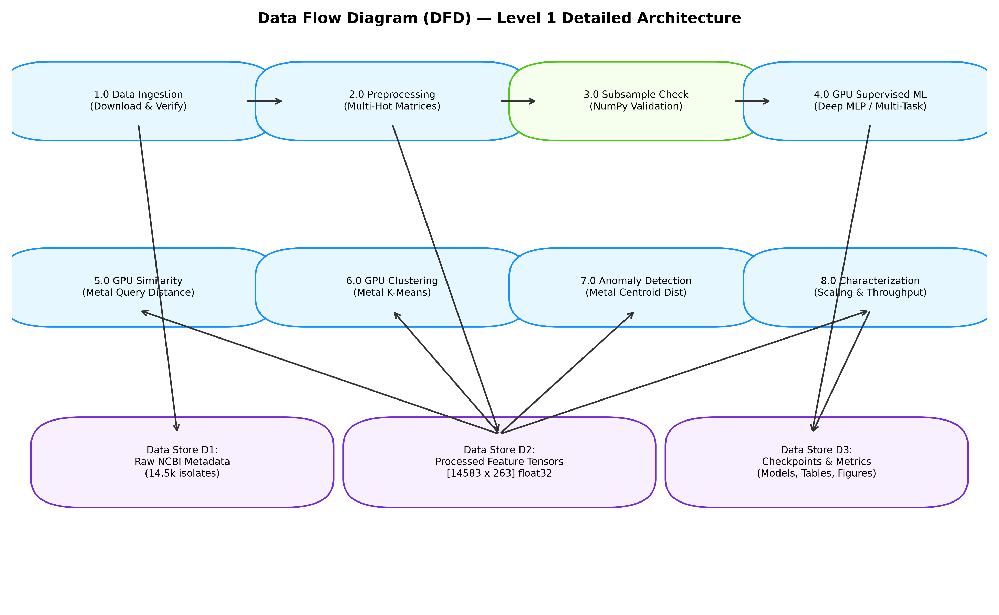
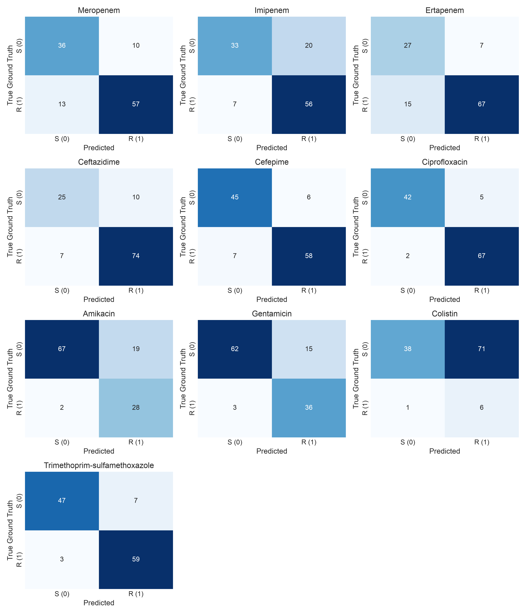
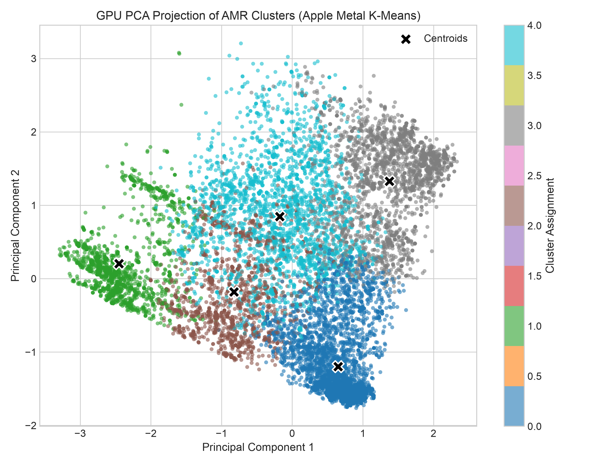
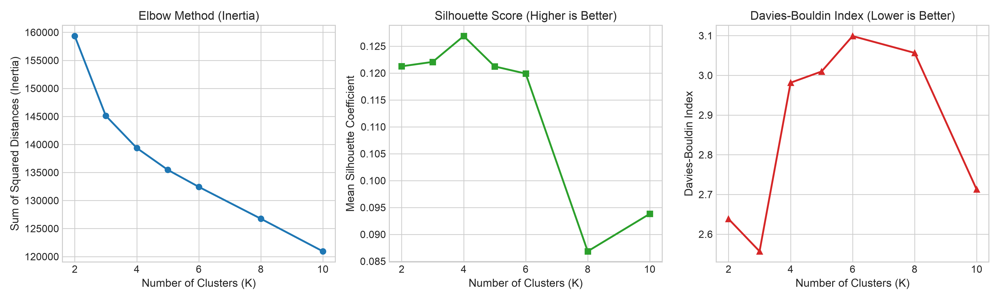
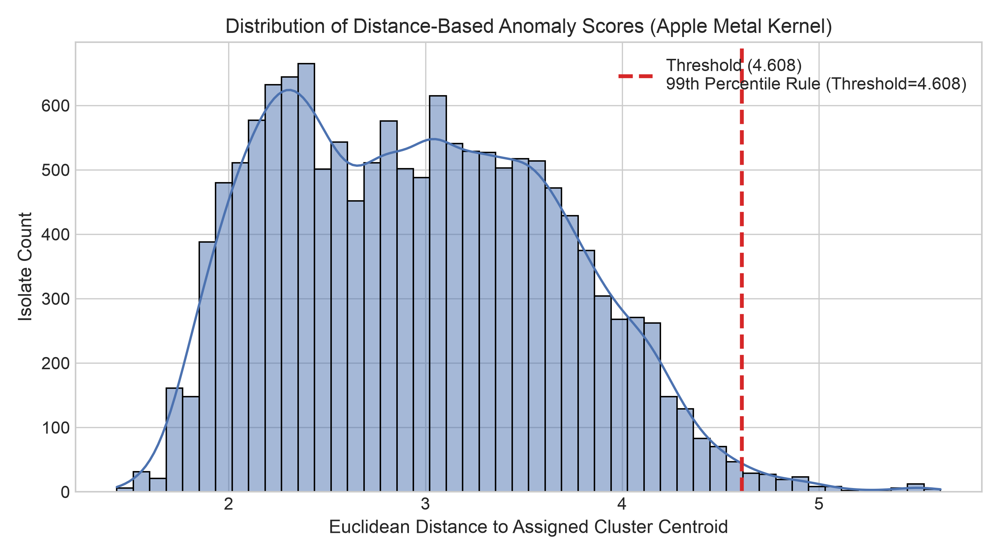
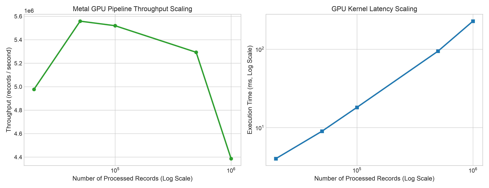

A reproducible, GPU-native machine learning and pattern discovery system engineered for Apple Silicon M3. Dispatches high-dimensional WGS resistance determinants through unified memory compute shaders for sub-millisecond similarity search, deep phenotype prediction, and unsupervised genomic clustering.
High-throughput data flow partitions contiguous float32 feature matrices into four dedicated GPU analytical branches dispatched concurrently in unified memory without PCIe transfer bottlenecks.




Five neural architectures trained on Apple Metal Performance Shaders (MPS) across 10 critical antibiotics and Multidrug Resistance (MDR). Achieves a macro-average ROC-AUC of 0.8945 with biological interpretability.
| Target Antibiotic | Tested | Accuracy | Precision | Recall (Sens) | Specificity | ROC-AUC |
|---|---|---|---|---|---|---|
| Ceftazidime (3rd Gen Ceph) | 96 | 92.7% | 1.000 | 91.4% | 100.0% | 0.9802 |
| Cefepime (4th Gen Ceph) | 86 | 90.7% | 0.983 | 89.2% | 95.2% | 0.9802 |
| Ciprofloxacin (Fluoroquinolone) | 88 | 96.6% | 0.985 | 97.1% | 94.7% | 0.9825 |
| Trimethoprim-Sulfamethoxazole | 83 | 90.4% | 0.922 | 95.2% | 76.2% | 0.9482 |
| Gentamicin (Aminoglycoside) | 88 | 86.4% | 0.800 | 92.3% | 81.6% | 0.9314 |
| Ertapenem (Carbapenem) | 98 | 81.6% | 0.957 | 81.7% | 81.3% | 0.8971 |
| Imipenem (Carbapenem) | 84 | 81.0% | 0.862 | 88.9% | 57.1% | 0.8964 |
| Amikacin (Aminoglycoside) | 88 | 78.4% | 0.622 | 93.3% | 70.7% | 0.8779 |
| Meropenem (Carbapenem) | 94 | 77.7% | 0.877 | 81.4% | 66.7% | 0.8720 |
| Colistin (Polymyxin) | 19 | 42.1% | 0.375 | 85.7% | 16.7% | 0.5238 |
Integrated gradient attribution validated that the deep neural models independently rediscover molecular mechanisms established in literature:
blaKPC-2 and blaKPC-3 beta-lactamase carriage.gyrA_S83I and parC_S80I DNA gyrase/topoisomerase point mutations.aac(6')-Ib acetyltransferase.sul1 and dfrA14 dihydropteroate synthase mutants.
Custom C++14-based Metal compute shaders compiled to Apple Silicon GPU machine code for zero-overhead SIMD execution across 10 GPU cores.
similarity.metal#include <metal_stdlib>
using namespace metal;
kernel void compute_similarity(
device const float* query_vector [[buffer(0)]],
device const float* database_matrix [[buffer(1)]],
device float* distances [[buffer(2)]],
device float* cosine_sims [[buffer(3)]],
constant uint& num_features [[buffer(4)]],
uint id [[thread_position_in_grid]]
) {
uint offset = id * num_features;
float sum_sq_diff = 0.0f;
float dot_product = 0.0f;
float query_norm_sq = 0.0f;
float db_norm_sq = 0.0f;
for (uint i = 0; i < num_features; ++i) {
float q = query_vector[i];
float d = database_matrix[offset + i];
float diff = q - d;
sum_sq_diff += diff * diff;
dot_product += q * d;
query_norm_sq += q * q;
db_norm_sq += d * d;
}
distances[id] = sqrt(sum_sq_diff);
float denom = sqrt(query_norm_sq) * sqrt(db_norm_sq);
cosine_sims[id] = (denom > 1e-6f) ? (dot_product / denom) : 0.0f;
}* Dispatched with 1D threadgroups of 256 threads. Matched 64-bit CPU reference within \(\epsilon = 4.77 \times 10^{-7}\).
Toggle resistance determinants to construct a synthetic isolate query vector and simulate the GPU Metal similarity shader calculation against archetypal clinical lineages:
Accelerated nearest-centroid assignment in Metal compute shaders coupled with GPU index-add reductions. Converged in 21 iterations for \(K=5\) without human labeling.

| Cluster | Isolates | MDR % | Primary Country | Dominant Resistance Genotypes |
|---|---|---|---|---|
| Cluster 0 | 5,135 | 2.4% | USA | emrD (99.9%), fosA (90.4%), oqxA (79.4%) |
| Cluster 1 | 2,097 | 6.2% | USA | parC_S80I (99.9%), gyrA_S83I (99.8%), fosA (100%) |
| Cluster 2 | 1,767 | 3.6% | China | fosA (99.8%), parC_S80I (95.9%), gyrA_S83I (88.6%) |
| Cluster 3 | 2,741 | 1.5% | UK | blaCTX-M-15 (93.3%), emrD (99.9%), fosA (95.6%) |
| Cluster 4 | 2,843 | 2.1% | Thailand | sul1 (94.4%), oqxA (92.5%), emrD (99.9%) |

Evaluates isolate distances from cluster centroids on the GPU to detect atypical genomic strains exceeding a strict 99th-percentile threshold (\(s > 4.608\)).

| Rank | Isolate Accession | Anomaly Score | Gene Count | Analytical Finding |
|---|---|---|---|---|
| 1 | PDT000440856.1 | 5.6176 | 46 genes | Hyper-carriage (vs. 16.6 mean) |
| 2 | PDT000440843.1 | 5.6149 | 43 genes | Hyper-carriage (vs. 16.6 mean) |
| 3 | PDT000440835.1 | 5.5511 | 45 genes | Hyper-carriage (vs. 16.6 mean) |
| 4 | PDT000440838.1 | 5.5416 | 44 genes | Hyper-carriage (vs. 16.6 mean) |
| 5 | PDT000440831.1 | 5.5326 | 43 genes | Hyper-carriage (vs. 16.6 mean) |
Biological Insight: The top 10 flagged strains represent extreme plasmid-mediated multi-resistance carriage, each possessing over 40 distinct antimicrobial resistance determinants (including multi-copy aminoglycoside and beta-lactamase genes).
Empirical hardware characterization across controlled workloads from 20,000 to 1,000,000 isolates on Apple MacBook Air M3 (Unified Memory Architecture).
| Workload Size | GPU Kernel Time | Pipeline Throughput | Memory Footprint |
|---|---|---|---|
| 20,000 isolates | 4.02 ± 0.06 ms | 4,977,481 rec/s | 20.1 MB |
| 50,000 isolates | 9.00 ± 0.19 ms | 5,558,540 rec/s | 50.2 MB |
| 100,000 isolates | 18.12 ± 0.31 ms | 5,519,758 rec/s | 100.3 MB |
| 500,000 isolates | 94.46 ± 2.39 ms | 5,293,384 rec/s | 501.6 MB |
| 1,000,000 isolates | 227.96 ± 33.18 ms | 4,386,736 rec/s | 1,003.3 MB |
Key Finding: Throughput peaks at 5.55 million records/second at 50,000 records, saturating the 10 Apple Silicon GPU cores. Near-linear scaling is maintained through 500,000 isolates with under 100 ms total latency.

Complete commands to clone, test, execute the GPU pipeline, and launch the interactive Streamlit dashboard locally on Apple Silicon.
# Clone git repository
git clone https://github.com/manisudhi/gpu.git
cd gpu/amr-gpu-ml
# Install dependencies in virtual environment
python3 -m venv .venv
source .venv/bin/activate
pip install -r requirements.txt# Runs full GPU/MPS test suite (10/10 tests pass)
make test
# or: python3 -m pytest -v tests/# Run full GPU analytical pipeline (Phases 1-8)
make run
# Generate all publication architecture diagrams
python3 scripts/generate_diagrams.py
# Launch interactive Streamlit local dashboard
make app
# or: streamlit run app/streamlit_app.py